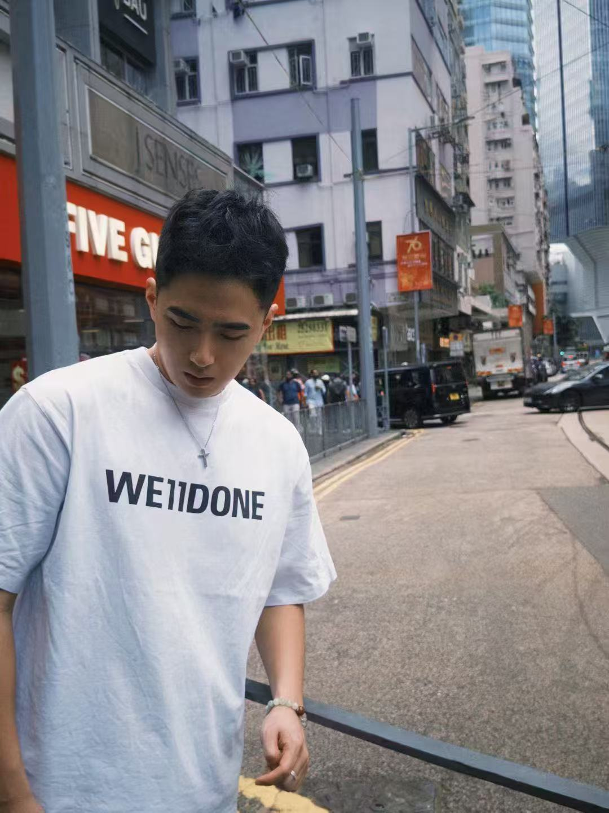

Hao (Eric) Jiang 蒋昊
LLM & Recommender Systems Researcher
I am currently a researcher at Kuaishou Technology
I recieved my both Bachelor's degree and Master Degree in School of Information and Communication Engnieering at Communication University of China (CUC)
I done my research in Key Laboratory of Media Convergence and Communication in CUC , under the supervise by Dr. Chuanzhen Li Dr. Hui Wang
I was an research intern in Social Computing Group of Microsoft Research Asia (MSRA) , working with Dr. Fangzhao Wu Dr. Xing Xie
I was also an research intern in Xiaohongshu (RedNote)
In my daily life, I am a passionate Basketball and Fitness enthusiast. I used to be the Captain of the men's basketball team at CUC, leading the team to participate in the CUBA Division II league.
My email is jianghaocuc@foxmail.com; feel free to contact me anytime!
LLM Safety
RecSys
Generative Ranking
Multi-Modal

Kuaishou Technology 2024 – Present
推荐大模型算法工程师 · Short-video Ranking with Large Models
Microsoft Research Asia (MSRA) Sep 2023 – May 2024
Research Intern · Social Computing Group
Xiaohongshu (RedNote) Sep 2022 – Sep 2023
Research Intern · 主页模型组 · Homepage Ranking Optimization
Communication University of China (CUC) Graduated 2021
B.Eng & M.Eng · School of Information & Communication Engineering
Responsible AI
LLM safety, reliability, explainability, privacy
Recommender Systems
Generative Rec, Multi-Modal, Foundation Model
Nov 2025
Paper LLM-Aligned Geographic Item Tokenization accepted to AAAI 2026 !
Jun 2025
Outstanding Campus Recruit for the Algorithm Track at Kuaishou Technology
Dec 2024
Outstanding Individual Award at Kuaishou Technology
Jul 2024
Star of Tomorrow Internship Award from MSRA
2025
Hao Jiang , Guoquan Wang, Donglin Zhou, Sheng Yu, Yang Zeng, Wencong Zeng, Kun Gai, Guorui Zhou
Hao Jiang , Guoquan Wang, Sheng Yu, Yang Zeng, Wencong Zeng, Guorui Zhou
2024
Hao Jiang , Chuanzhen Li, Mingxiao An
Peihua Mai*, Hao Jiang* , Ran Yan, Youjia Yang, Zhe Huang, Yan Pang
2023
Hao Jiang , Chuanzhen Li, Juanjuan Cai, Jingling Wang
Hao Jiang , Chuanzhen Li, Juanjuan Cai, Jingling Wang
Hao Jiang , Chuanzhen Li, Juanjuan Cai, Jingling Wang
2025
Outstanding Campus Recruit
Algorithm Track · Kuaishou Technology
2024
Star of Tomorrow
Internship Award · MSRA
2022
First-tier CUC Scholarship
Communication University of China
2021
Outstanding Graduate
Communication University of China